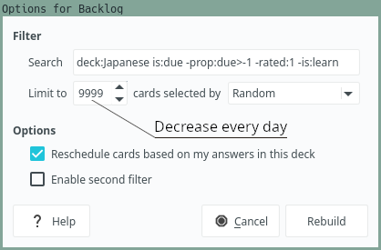
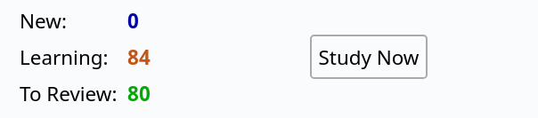
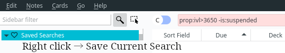

How to review
Though Anki is an excellent piece of software, you can learn languages more effectively if you tweak some settings and know how to review. Even if you're using Anki for something other than studying human languages, this article may still help you.
Anki settings
Make sure you've applied the settings from the Setting up Anki article. Below is a quick overview.
- Set starting ease to 131%. It's kind of a magic number. 130% is the lowest possible ease, but Anki doesn't allow you to reliably use it. By bumping it up 1% you avoid the limitation. Because the Ease effectively becomes locked between 131% and 130%, it can't decrease further. This way you hijack Anki's default behavior which otherwise would lead to falling into Ease Hell.
- Set Interval Modifier to not less than 190%. This initial increase counteracts the low Starting Ease. You can increase it further if your retention is high enough. I think up to 300% should be fine.
- Enable Anki 2.1 scheduler (
V3scheduler). It's a little less limiting, less buggy and more convenient. In newer Anki versions it's the default.
Grading
When you're ready to grade a card, you're asked to choose from 4 different options: "again", "hard", "good" and "easy". Use only "again" and "good". Do not press "hard" and "easy" unless you're aware of the consequences.
When you press "hard" or "easy", the card's Ease factor changes. As a result, the speed at which the card's interval is going to grow from that point onward also changes. Pressing "hard" makes the card's interval grow slower, and the card comes up for review more often. The new Ease factor stays in effect indefinitely until you do something that resets it back to the default value. When a card comes up for review more often than needed, you spend unnecessary time reviewing. Likewise, pressing "easy" makes the card appear for review less frequently causing you to be more likely to forget it at some point. Setting Starting Ease to 131% can mitigate some consequences, but not all.
There is an Anki add-on that removes some or all answer buttons. I cover it a few sections below.
When you see a card, grade it "good" if you understand the target word. To grade the card "good", you should be able to:
- Understand what it means in context, if there's context on the card.
- Read it phonetically, if the word contains kanji.
If not, select "again" and relearn the card.
Sometimes you need to press "again" multiple times until you memorize the card. But as soon as you understand the word, hit "good". Don't hit "again" over and over because you're not sufficiently confident in your memory.
Anki never guarantees that you will remember every single item you put into it. It can only guarantee a certain retention rate, usually about 70-90% depending on the settings. Each review session, expect to forget a number of cards. It's a natural part of using the program.
If you forget too many cards, it is possible that your cards are not optimally formatted or your Interval Modifier is too large. Decrease the Interval Modifier, remove excessive or redundant information from the cards, use different example sentences, add examples if you don't have any. If you rarely forget any cards, you're seeing them too often. This means you need to increase you Interval Modifier.
Showing up
Khatz's blog has an article about Showing up. 100% of winning is showing up. Dedicate the time, and you'll see the results. Not only this concept is important when using Anki to learn languages, it is mandatory. One of the objectives of using an SRS is to achieve long-term retention. Long-term retention is impossible without being consistent. The only way to benefit from using an SRS is to use it regularly. Anki expects you to do your reviews every single day. If you fail to do so, due cards quickly pile up.
If you do a consistent number of new cards each day, the number of reviews tends to be consistent as well. So, if you miss a day, expect your review load to double the next day. If you miss two days, you'll have to do roughly 3 times as many reviews. Anki's algorithm schedules cards so that ideally they should come up for review just before you forget their content. If you don't do your reviews on time, expect to forget more cards.
There are two distinct approaches to dealing with SRS reviews. Many people find that they are able to form a consistent habit if they do their reviews at the same time each day, such as first thing in the morning. Others prefer to fit in reviews between activities in their day. For example, they may use their phone to complete a few reviews while standing in line, taking a bus, or waiting for something.
Your goal is to experiment and find an approach that works for you and enables you to consistently complete your reviews. Or you can choose a combination of the two approaches. Personally, I find that the first approach works for me well. I have a laptop dedicated to doing my Anki reps. Besides Anki, the laptop has almost no other software installed to prevent all possible distractions. But if for some reason I don't have time in the morning, I fall back to the second approach and try to finish my reviews on a phone in moments when I'm not doing anything in particular.
Reading sentences aloud
Should you read sentences aloud when doing Anki reps? Khatz recommends that you should. I personally don't think it's necessary, and I rarely do it. If a sentence looks cool I usually pronounce it just for the fun of it.
Reading out loud can definitely help you remember the sentences better because you're actively using your muscles. It's harder to skim when you're engaged.
Another thing to consider is whether you are going to build bad pronunciation habits by pronouncing Japanese out loud. In this regard, I would definitely recommend avoiding doing it if you're a beginner. Any type of pronunciation practice requires you to have acquired large aspects of the language and have built strong phonetic awareness. If you lack these competences, you set yourself to repeat pronunciation mistakes over and over. Ideally, you should also actively think about pitch accent when you're practicing speaking, which requires you to know the rules and the accents of individual words.
With this in mind, reading sentences aloud can be helpful, but only if you're already intermediate or above.
Check your retention
I recommend periodically checking your monthly True Retention. Shift-click on the "Stats" button at the top of the Anki window. The recommended retention is 75%-90%. If you see that your retention stays out of these boundaries, act accordingly. Decrease your Interval Modifier if your retention is too low, increase if it's high.
If your retention is below 70%, that's a call to action. Low retention rate renders Anki useless, can make you hate your reviews or even stop using Anki completely. Change your Anki settings, reformat your notes, delete problematic cards.
Retention rate above 90% is considered sub-optimal. It means you review your cards too often.
Filtered decks
Don't review in filtered decks. After experimenting with filtered decks for multiple years I've come to the conclusion that they're too buggy and too unreliable. They're only good for temporarily storing cards (in case of backlogs, for example). Some bugs I've run into completely messed up intervals of my cards.
Fighting backlogs
This is where filtered decks come handy.
Ideally you want to finish your reviews every day.
In practice, it's not always possible.
There are going to be days when you accumulate backlogs.
A backlog is an amount of cards that you should already have reviewed.
Anki calls such cards overdue.
If you miss your reviews,
your review queue becomes divided between cards that are due today,
most of which you still remember,
and the cards that were due on the previous days,
which you've likely forgotten a great number of.
You can view a list of the overdue cards by typing is:due -prop:due=0 in the Anki Browser.
If you were to try to eliminate the backlog by simply reviewing the cards until no more due cards remain, Anki would show you the overdue cards first. Anki is programmed in a way that makes it prioritize cards with older due dates over the cards that became due recently. If the backlog is large enough, this would put you in a long-lasting state of needless forgetting. If you go along with Anki's algorithm and prioritize relearning forgotten cards, then you will end up forgetting the cards that are due today, unless you manage to clear your entire backlog in one sitting.
The solution is to create a filtered deck and use it to store the overdue cards. To do this, press "F" or go to "Tools" > "Create filtered deck...".
Let's say my Japanese deck is called "Japanese". The Search field is going to look like this:
deck:Japanese is:due -prop:due>-1 -rated:1 -is:learn
deck:Japaneselimits search to my Japanese deck.is:duetells Anki to select only due cards.-prop:due>-1excludes cards due today.-rated:1excludes cards that were already reviewed today.-is:learnexcludes cards in the learning or relearning queues.
Once you have the filtered deck set up, you've stopped the bleeding. Every day after you've finished your normal reviews come back to the filtered deck and decrease the number of cards it can store. The cards will be returned to your Japanese deck. Review those cards.

Deck settings.
Take a look at the "cards selected by" setting. It presents a number of options you can choose from to fight the backlog the way suits you. If you want to review cards that you're most likely to still remember, change it to "Increasing intervals". This way when you reduce the number of cards the filtered deck can store, the cards with the largest intervals will be pulled out first. On the other hand, if you choose "Decreasing intervals", the cards with the smallest intervals will be the first to go.
The benefit of using filtered decks for fighting backlogs is that
you don't move any cards yourself.
Once they leave the filtered deck,
they automatically return to the decks they were pulled out from.
If this approach doesn't work for you, try suspending overdue cards instead.
To do so, open the Anki Browser, type is:due -prop:due=0 and suspend the cards that will show up.
Unsuspend the cards in chunks once you have time to review them.
Accumulating a backlog and being unable to properly manage it is the number one reason people quit Anki altogether. Keep your backlog isolated in a filtered deck so that it doesn't overwhelm you.
Fighting flooded learning queue
It is not uncommon to find yourself in this situation.

Anki window.
Anki is terrible at queuing more than 30 cards from the learning queue. It is going to show you them over and over until they graduate. If the cards are not particularly easy, you may never get to the review queue. What I recommend you to do in this case is similar to the trick used to fight backlogs.
Create a filtered deck with these settings.
deck:Japanese is:due is:learn -rated:1 -is:new
Send all your learning cards to this deck, then pull out 10~20 at a time and graduate them.
New cards
Choose how many new cards you want to do each day and stick to that number. We recommend learning between 10~30 cards a day. Don't learn too many new cards. The amount of new cards together with retention determine how many reviews you will have to complete. If you feel overwhelmed by the number of daily reviews, you can influence the number of future reviews by decreasing the number of new cards or stopping learning new cards completely for a period of time. If you feel like you have headroom, raise the amount of new cards.
You can get away with learning more new cards if you increase your Interval Modifier, but in return expect your retention to go down.
Do not cap your reviews by decreasing the Maximum reviews/day setting in order to do more new cards. It will only hide the due cards from you. Failing to do all of your reviews on schedule will form a backlog. What's worse, the backlog will be invisible because Anki will hide it from you.
Leeches
Anki has a setting that controls how many times you can fail a card before it becomes a leech, Leech threshold. It doesn't mean the number of times you simply press "Again" on a card, but rather the number of times you fail a card that has previously graduated to the review queue. In other words, hitting "Again" on a card over an over on the same day doesn't make it a leech.
When Anki marks a card as a "leech",
the card receives a "leech" tag.
You can later find leeches by opening the Anki Browser and typing tag:leech in the search field.
If Leech Action is set to "Suspend card", the card won't come up for review anymore.
It's important to quickly pull leeches out of rotation by suspending them
so that they don't waste your review time.
After you've neutralized a leech, decide what to do with it. Change the content of the card to make it easier to memorize or just wait until your brain is ready to learn it again. Before you re-learn the card, you have to reset it.
In my experience, most leeches pop up as a result of failed attempts to memorize kanji readings.
The best way to force a particular reading into your memory
is to memorize multiple words that use the same reading.
For example, if you can't remember how to read 印璽,
make cards for words such as 御璽 or 国璽
and learn all of them at the same time.
If you can't remember a card due to a kanji reading not sticking, people also recommend putting furigana for the difficult word on the front of the card. Personally I wouldn't do this myself, but it's a cheap way out.
Mortician automatically buries cars that you fail too many times. Use it to prevent potential leeches from wasting your time.
Deleting and suspending cards
There are several articles on the AJATT site where Khatz fiercely recommends deleting cards.
Delete. For happiness, for hygiene, for the smell, for sanity, for fun.
Get rid of anything even remotely sucky. Delete. Delete. Delete. Don’t worry. You obviously don’t need them.
Later many methods derived from AJATT copied this advice.
There are situations when it makes sense to pull a card out of the review queue:
- You can't seem to remember a card.
- A card is too hard or too easy.
- It takes too much time to rep.
- You mined it thinking it was a 1T card and turns out it's not.
Preemptively getting rid of cards that have a potential to become leeches or cards that are too complicated and waste your time is a valuable technique. It is going to help you avoid getting overwhelmed with the SRS in the long run.
However, I advise you to be careful with deletions. It's way harder to restore a deleted card than bring back a suspended one. Suspend cards instead. If you change your mind, put the card back into the rotation and try to learn it again.
Card retirement
Let's say you have 100 reviews each day, you learn 10 new cards a day, and your retention is 90%. If you continue your current Anki routine for an additional 15 years, your daily amount of reviews will be 200.
This calculation indicates two things.
- You have to start suspending cards once they reach a certain interval, otherwise your review load will be increasing forever.
- This only becomes a problem once you've used Anki for many years.
It's okay to suspend or even delete cards when they reach obscene intervals,
like 5, 10 or even 15 years.
To find such cards, open the Anki Browser and type prop:ivl>3650.
The number 3650 corresponds to a card's interval in days,
the search expression finds all cards that have intervals larger than this value.
Now you can suspend the cards by pressing Ctrl+J.
Next time when you search cards eligible for retirement,
add -is:suspended to the search expression to filter out the cards you've already suspended.
You can bookmark the current search expression
by right-clicking Saved Searches and choosing Save Current Search.

Anki Browser Search.
Note: There are some add-ons on AnkiWeb that offer automatic retirement. They modify the scheduler unpredictably and have earned negative reputation among Japanese learners. Don't use any add-ons that mess with the scheduler. They often have bugs and may corrupt your collection.
Get the AJT Flexible Grading add-on
AJT Flexible Grading comes with three important features:
- Pass-Fail mode
- Grading from the front side
- The ability to hide some or all answer buttons.
To install the add-on, follow the instructions on AnkiWeb.

Pass-Fail mode
The Pass-Fail mode essentially doesn't let you press "Hard" and "Easy" buttons. There are two benefits associated with this.
One being that having to decide between various options can actually make your Anki study less efficient. When you're deciding how to grade a card, you're wasting your mental resources. Do it a hundred times, and you'll experience something called decision fatigue. Instead of deciding how well you know something simply decide whether you know it or not.
Another being that most Anki users don't understand what Anki's "Hard" and "Easy" buttons actually do. Both buttons affect the cards' Ease factor. Using the "Hard" button can penalize you and greatly add to your review count over time. Using the "Easy" button can artificially inflate your card scheduling intervals and lead to forgetting and lower retention in the future. For the vast majority of us the best option is to simply use Anki's "Good" and "Again" buttons.
Flexible grading
Flexible grading refers to the ability to pass an Anki card without having to reveal the answer. If you believe that you really know the content of a flashcard, you may decide to skip its reverse side and immediately grade the card. It should speed up review time and save you some keypresses.
Flexible grading is enabled by default in the add-on's options. You can grade the cards by pressing Vim-keys on your keyboard or by using the default Anki hotkeys.
| Vim bindings | Default bindings | Description |
|---|---|---|
h |
1 |
Again, Fail |
j |
2 |
Hard |
k |
3 |
Good, Pass |
l |
4 |
Easy |
Pressing 1-4 to grade cards is convenient, but it's not as convenient. Vim-like bindings let you grade the cards with your fingers lying on the home row keys, much like when you navigate a document in Vim.

I'm sure you'll appreciate how much more quickly you'll be able to finish your reviews.
Getting rid of answer buttons
Once you get used to blasting through your reps with Vim-like hotkeys, you realize that the answer buttons are completely redundant. AJT Flexible Grading has an option to remove those buttons, making the Anki UI less cluttered.
Last review stats at the top
Have you ever had doubts like, "did I grade that card right?" after doing a rep? Maybe your finger slipped a bit, and you're not sure whether you've pressed the right button. AJT Flexible Grading shows the result of the last review at the top. It tells you what button you pressed and what interval the card has right now. By clicking on the stat you can bring up the card browser window showing the last answered card.
Summary
The SRS best practices:
- Starting Ease 131%.
- Interval Modifier 192%, increase if needed.
- Enable the V3 scheduler.
- Show up every day to do your reps.
- Don't review in filtered decks.
- Use filtered decks for storing old due cards (backlog).
- Do no more than 30 new cards a day, unless you know what you're doing.
- Have Anki suspend your leeches. Deal with them as they come up.
- Install AJT Flexible Grading. Use the Vim hotkeys when reviewing.
- Use the Pass-Fail mode to avoid "Hard" and "Easy" buttons.
- Grade easy cards from their front side.
Tags: anki